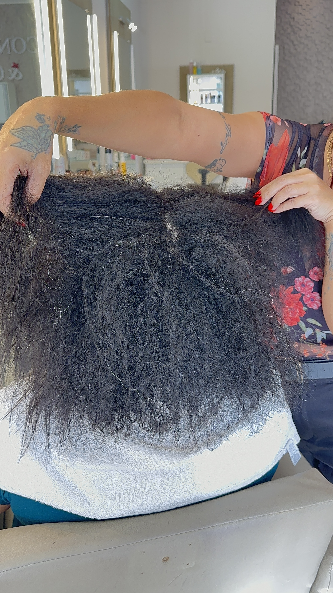
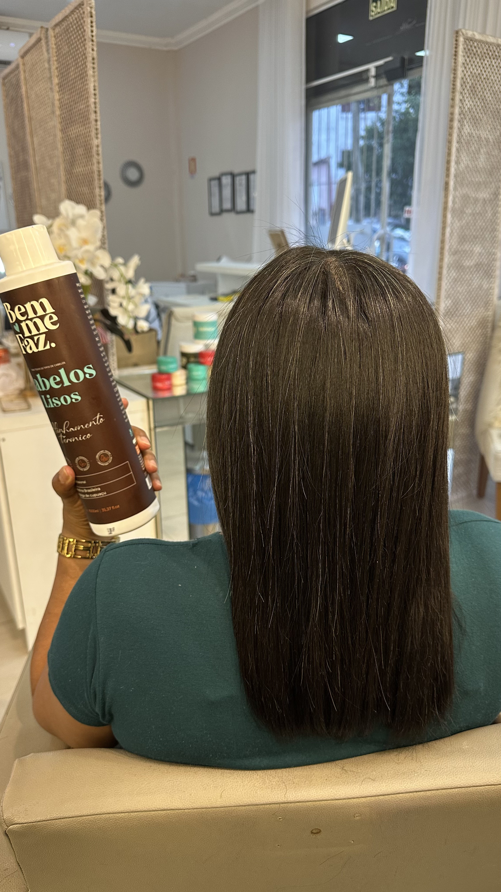
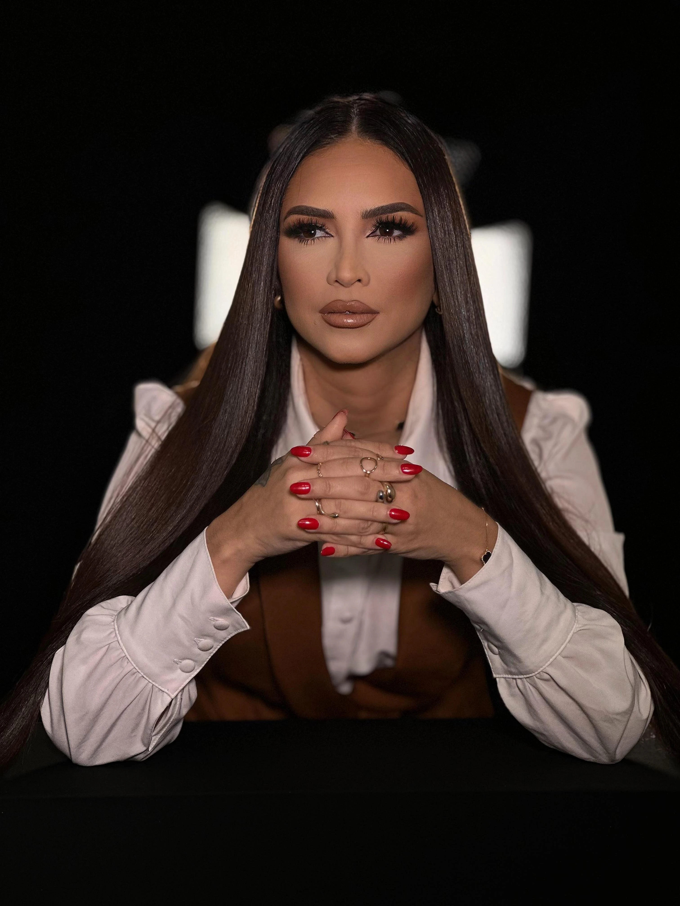
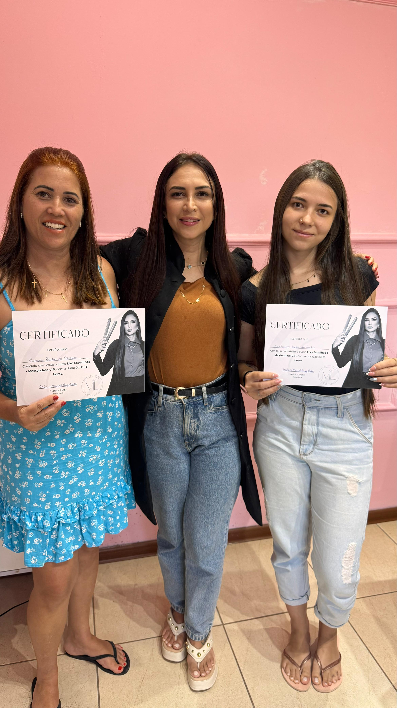
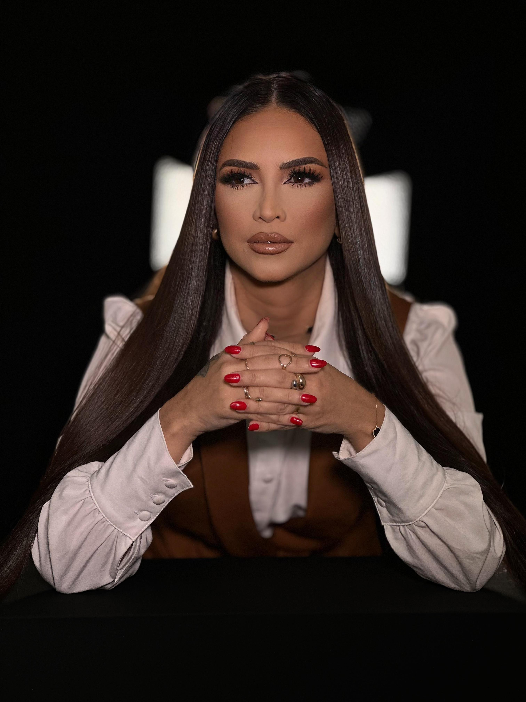

Transformação 01
Par de fotos a confirmar.
Beleza, cuidado e autoestima em Viamão
Um atendimento individual, pensado para revelar a beleza natural dos seus cabelos com saúde, elegância e atenção aos detalhes.

Especialista em alisamentos Resultados com cuidado e responsabilidade.
Serviços
Alisamentos e tratamentos personalizados, com uma experiência tranquila e dedicada a você.
Resultados reais
Esta seção está pronta para receber os pares corretos de fotos após a seleção e conferência.


Par de fotos a confirmar.


Par de fotos a confirmar.
Experiência e reconhecimento
Ao longo da minha trajetória, tive a oportunidade de ministrar palestras em Brasília, Manaus e no Paraguai. Também ofereço cursos personalizados no meu próprio espaço, compartilhando técnicas e experiências com outros profissionais da beleza.
Meu trabalho já recebeu premiações e reconhecimentos, resultado de anos de dedicação, aprendizado e compromisso com cada cliente.





Premiações Espaço para foto de reconhecimentoAgendamento
Atendimento na Rua Marcelino de Figueiredo, 791, Centro, Viamão - RS. Use o botão para iniciar uma conversa no WhatsApp.